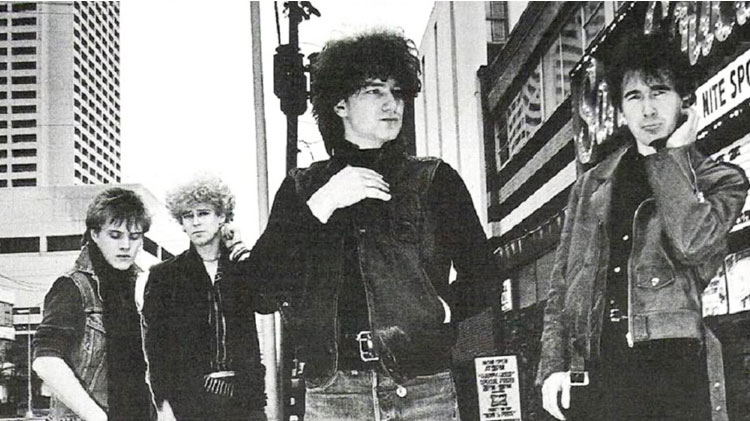
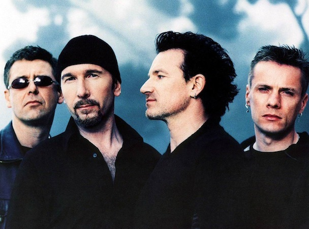
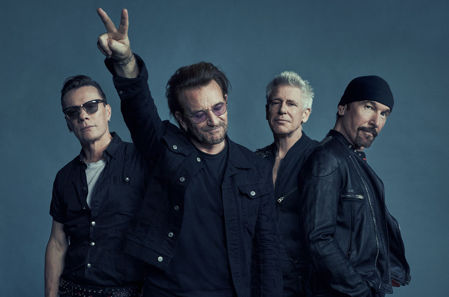

U2 are an Irish rock band from Dublin, formed in 1976. The group consists of Bono (lead vocals and rhythm guitar), the Edge (lead guitar, keyboards, and backing vocals), Adam Clayton (bass guitar), and Larry Mullen Jr. (drums and percussion). Initially rooted in post-punk, U2's musical style has evolved throughout their career, yet has maintained an anthemic quality built on Bono's expressive vocals and the Edge's chiming, effects-based guitar sounds. Bono's lyrics, often embellished with spiritual imagery, focus on personal and sociopolitical themes. Popular for their live performances, the group have staged several ambitious and elaborate tours over their career.
The band was formed when the members were teenaged pupils of Mount Temple Comprehensive School and had limited musical proficiency. Within four years, they signed with Island Records and released their debut album, Boy (1980). Works such as their first UK number-one album, War (1983), and the singles "Sunday Bloody Sunday" and "Pride (In the Name of Love)" helped establish U2's reputation as a politically and socially conscious group. By the mid-1980s, they had become renowned globally for their live act, highlighted by their performance at Live Aid in 1985. U2's fifth album, The Joshua Tree (1987), made them international stars and was their greatest critical and commercial success. Topping music charts around the world, it produced their only number-one singles in the US to date: "With or Without You" and "I Still Haven't Found What I'm Looking For".
Facing creative stagnation and a backlash to their documentary/double album, Rattle and Hum (1988), U2 reinvented themselves in the 1990s. Beginning with their acclaimed seventh album, Achtung Baby (1991), and the multimedia-intensive Zoo TV Tour, the band pursued a new musical direction influenced by alternative rock, electronic dance music, and industrial music, and they embraced a more ironic, flippant image. This experimentation continued through their ninth album, Pop (1997), and the PopMart Tour, which were mixed successes. U2 regained critical and commercial favour with the records All That You Can't Leave Behind (2000) and How to Dismantle an Atomic Bomb (2004), which established a more conventional, mainstream sound for the group. Their U2 360° Tour of 2009–2011 set records for the highest-attended and highest-grossing concert tour, both of which were surpassed in 2019. The group most recently released the companion albums Songs of Innocence (2014) and Songs of Experience (2017), the former of which received criticism for its pervasive, no-cost release through the iTunes Store.
U2 have released 14 studio albums and are one of the world's best-selling music artists, having sold an estimated 150–170 million records worldwide.[1] They have won 22 Grammy Awards, more than any other band, and in 2005, they were inducted into the Rock and Roll Hall of Fame in their first year of eligibility. Rolling Stone ranked U2 at number 22 on its list of the "100 Greatest Artists of All Time".[2] Throughout their career, as a band and as individuals, they have campaigned for human rights and social justice causes, including Amnesty International, Jubilee 2000, the ONE/DATA campaigns, Product Red, War Child, and Music Rising.
